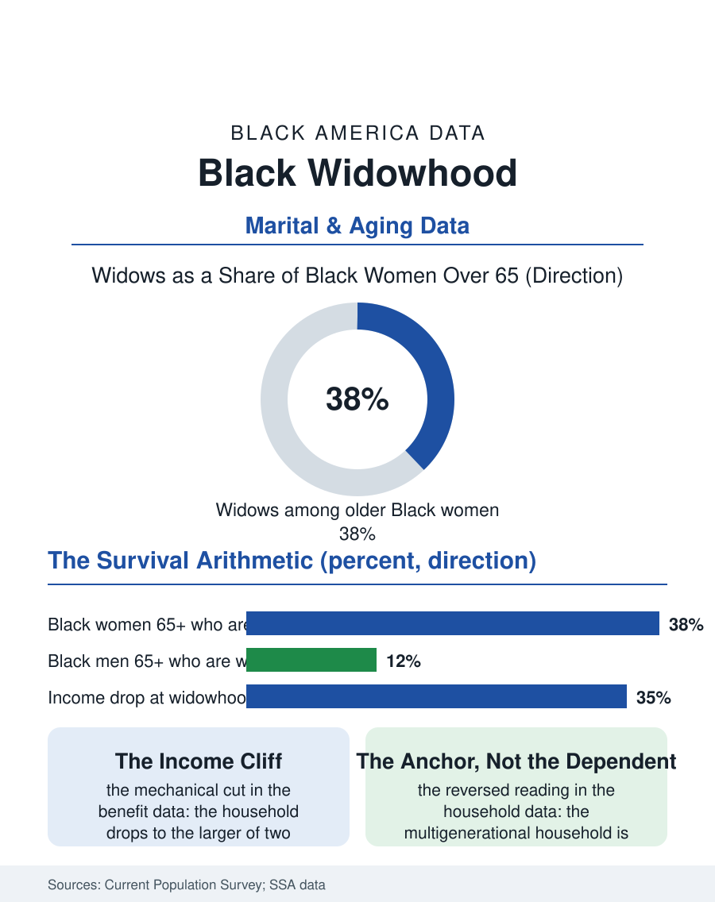

Black Census
The Long Stage: Black Widowhood
Widowhood is a fifteen-to-twenty-year life stage for Black women, with a mechanical income cliff and a household role the tables misread as dependence. The widowed file.

Widowhood is the most common marital transition of old age, and it is overwhelmingly a Black woman's experience of it: women outlive men by years, marry men older than themselves, and remarry at lower rates, so the widowed population of Black America counts widows over widowers by a wide multiple, and widowhood's economics, the income drop, the housing decisions, the grief file, are gendered accordingly. This article reads the widowed file.
The Arithmetic of Survival
The census marital tables give the file its stark basic shape. Among Black Americans over sixty-five, widows constitute a large plurality of women, on the order of two in five, while widowers are a small minority of older men, most of whom are married, since the surviving men are outnumbered and the remarriage market rewards them. The median widowhood arrives in the late sixties or early seventies for Black women and then extends, on life expectancy's arithmetic, for fifteen to twenty years, making widowhood not an event but a life stage longer than childhood, longer than many careers. The bereavement sequence in the longitudinal studies is densely documented: the grief year with its measurable mortality elevation for the survivor, the widowhood effect, strongest in the first months; the income transition, the household dropping to the larger of two Social Security benefits and losing the smaller, a mechanical cut of a third or more of the couple's benefit income arriving in the same season as the funeral bills; and the housing decision, where the solo file's grandmother in the paid-off house weighs staying among the memories and the maintenance against the children's invitations and the apartment's ease, a decision the data show resolved overwhelmingly toward staying, tenure in place lasting in the survey data far beyond the predictions of the downsizing literature.
The Income Cliff and the Safety Net
The widow's poverty rate is the file's policy center. Older Black widows record poverty rates well above older married couples and above older white widows, a gap the Social Security structure explains in detail: the survivor benefit replaces only part of the couple's combined income, private pensions, where they existed at all in the occupational files, often paid as single-life annuities that died with the worker under choices made decades earlier, and the widow's own earnings record, interrupted by the caregiving years, yields a retirement benefit too small to close the gap. The surviving spouse's labor extends the working years in the data, widows in their sixties employed at high rates in the care and service economies. The community's informal net is the other half of the net's reality: the church's widow ministry is an institution of Black congregational life with a name and a meeting day, the adult children's transfers flow upward in the family data, and the multigenerational household of the census files is very often, at its core, a widow's household with generations accreted around her rather than a young family's expansion, a reading that reverses the standard interpretation of the same table. The widow is not the household's dependent. In a plurality of the cases the survey can see, she is its anchor, its homeowner, and its bank of first resort.
Remarriage, Companionship, and the Later Years
The later-life relationship file has its own data, and it declines the stereotype of the widowed years as an epilogue. Remarriage rates for Black widows are low in the marital tables, lower than widowers' by the market's arithmetic and lower than white widows', but the cohabitation and companionship data, the living-apart-together arrangements the surveys have learned to ask about, show a social and romantic life that the marital categories miss entirely, in the pattern of the never-married file's warning about legal statuses. The caregiving recursion completes the portrait: the widow of seventy-five becomes the caregiver of the widowed friend of eighty, the kin-keeping labor rotating through the generation of women the longevity data selected as survivors, a workforce the care economy's statistics almost entirely fail to count because it is paid in the currency the family files run on. The widowed file closes at the church anniversary where the widows' ministry sits in its reserved pews, in white twice a year, a visible institution of survival. The census counts them as a marital status. The file corrects the count: they are a generation's load-bearing wall, the longest-serving members of every family in this atlas, holding houses, grandchildren, and one another, for the fifteen or twenty years the arithmetic allots, which they have a documented habit of exceeding.
More in Black Census
The Black Population of the United States: Size, Definitions, and Distribution
The Black population of the United States totals 52.8 million — 15.4 percent of the nation. How the Census Bureau defines and counts the population, and where it lives.
Black Median Household Income in the United States
Black median household income stands at $56,490 in the Census Bureau's annual income report — how the figure is measured, how it compares, and what drives it.
The Black Poverty Rate: Levels, Children, and the Long Trend
The official Black poverty rate is 17.1 percent — against 11.1 percent nationally and 7.7 percent for non-Hispanic White Americans. How poverty is measured and what the data show.
Source: U.S. Census Bureau, Current Population Survey marital status data; Social Security Administration survivor benefit statistics.